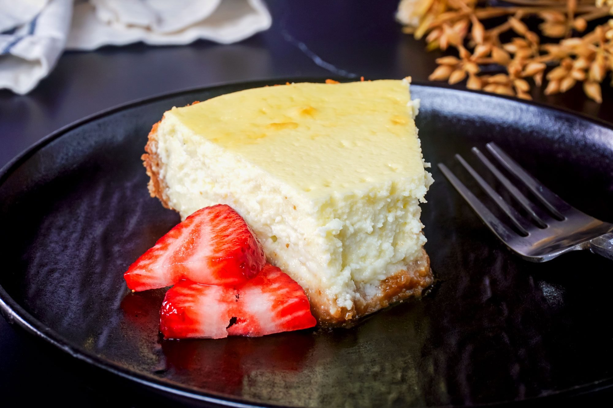

cottage cheesecakes

Description
Творожные сырники — это популярное блюдо в русской кухне,
которое приготавливается на основе творога. Это мягкие, влажные
и ароматные курчавые кексы, которые часто подаются с медом,
вареньем, сметаной или фруктами.
Ingredients
- Творог ........................................................
350 г
- Куриное яйцо ......................................
2 штуки
- Пшеничная мука .................
6 столовых ложек
- Сахар ...................................
2 столовые ложки
- Подсолнечное масло ..........
5 столовых ложек
Steps
- Положите весь творог в кастрюльку и
разомните его вилкой так, чтобы в нем не осталось
крупных комков. Разбейте в него яйца,
всыпьте сахар
и тщательно все перемешайте. Лучше не использовать
слишком сухой или слишком влажный творог, иначе
сырники будут разваливаться в процессе приготовления.
- Всыпьте в творог 5 столовых ложек (с горкой) муки и тщательно
перемешайте. Можно добавить немного больше муки, сырники
получатся
тогда более плотными. Или муки можно добавить чуть меньше, и
тогда сырники будут нежнее. В итоге у вас должна
получиться
однородная масса, из которой можно будет лепить сырники.
- Поставьте сковороду на средний огонь и налейте в нее подсолнечное
масло.
- Насыпьте на тарелку немного муки. Слепите несколько небольших
шариков из получившейся творожной массы и положите их
на тарелку.
Лучше лепить разом 4–5 шариков — столько, сколько поместится
одновременно на сковороду. Затем по очереди
обкатывайте
творожные шарики в муке, плющите их в небольшие лепешки
(они не должны быть слишком тонкие) и выкладывайте
на
сковороду.
- Обжаривайте сырники 1–2 минуты до появления золотистой корочки.
Затем переверните их на другую сторону и также обжарьте
до
золотистого состояния.
- Повторяйте, пока творог не закончится.
Main page